HƯỚNG DẪN CHỨC NĂNG KÊ TOÁN KHO
Trong chức năng “Kế toán kho” bao gồm có ba phần tương ứng với ba loại hình doanh nghiệp đó là: Gia công, Sản xuất xuất khẩu và Chế xuất. Trong mỗi phần đều có các nghiệp vụ như đã giới thiệu ở trên.
Để đi vào chi tiết từng nghiệp vụ tôi sẽ hướng dẫn chi tiết các nghiệp vụ cho loại hình Gia công, các loại hình khác đều thực hiện tương tự.
Lưu ý :
- Nếu bạn sử dụng quyết toán mức độ (1) thì không sử dụng chức năng này, hãy xem hướng dẫn sử dụng cho nhóm đối tượng của mình tại phần 2. Hướng dẫn sử dụng Sổ quyết toán.
- Nếu bạn là doanh nghiệp sử dụng quyết toán mức độ (2) theo sơ đồ trên thì phải thực hiện đầy đủ các bước theo hướng dẫn dưới đây.
- Nếu bạn là doanh nghiệp đã có phần mềm quản lý kho chuẩn của riêng doanh nghiệp (tức là sử dụng mức độ (3)) thì bạn tiến hành Bước 1: Lập danh mục, Bước 2: Cập nhật tồn đầu và xem thêm phần Hướng dẫn import dữ liệu chứng từ để đưa các phiếu chứng từ từ file excel được kết xuất ra bằng phần mềm quản lý kho của mình.
Lập danh mục kho cũng đồng nghĩa với việc tạo bảng MAP giữa mã hàng theo nghiệp vụ quản lý kho kế toán với mã hàng theo nghiệp vụ Hải quan. Đây là công việc đầu tiên bạn phải làm trước khi lập chứng từ, việc lập danh mục nhằm xác định được bảng mã vật tư quản lý theo mã code ( mã kho chi tiết) và mã hàng ECUS tương ứng với nó, giữa dữ liệu chứng tử ở Sổ quyết toán và Kế toán kho có mối liên hệ thông qua bảng map này làm cầu nối.
Để thực hiện bạn vào menu “Kế toán kho/ Gia công” :
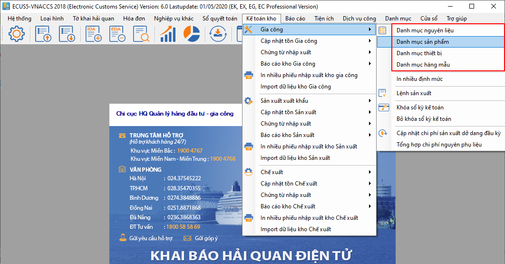
Bạn lần lượt thiết lập cho danh mục nguyên liệu, sản phẩm, thiết bị, hàng mẫu ví dụ bạn chọn “Danh mục nguyên liệu” :
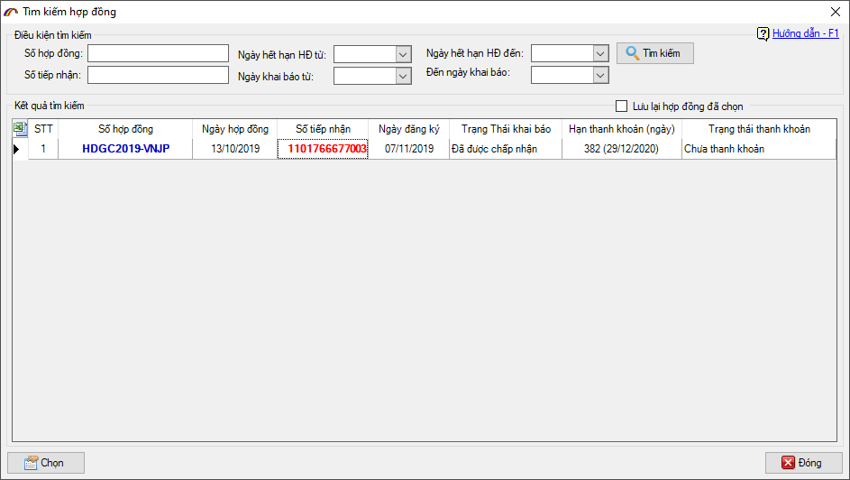
Chọn hợp đồng để tạo danh mục, màn hình hiện ra như sau :
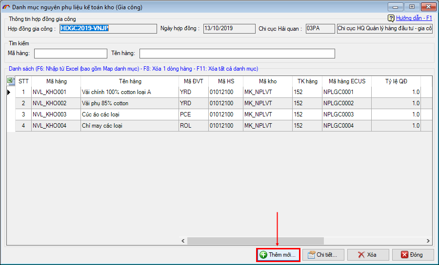
Nhấn nút “Thêm” để thêm mới một nguyên phụ liệu:
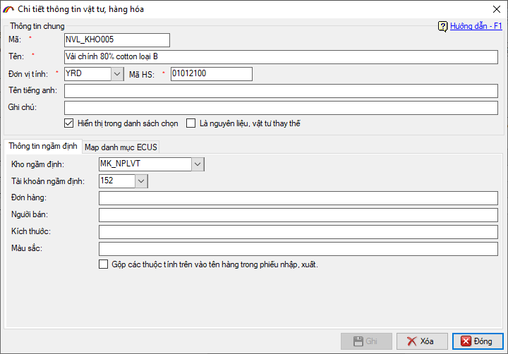
Nhập vào mã hàng theo quản lý kho tại mục thông tin chung, đồng thời bạn có thể nhập vào các thông tin mặc định như Mã kho, Tài khoản ngầm định, đơn hàng, người bán, kích thước và màu sắc.
Trường hợp bạn muốn phần mềm tự động ghép các thuộc tính vừa thiết lập mặc định vào trong tên hàng khi lập phiếu nhập, xuất thì bạn đánh dấu chọn vào “Gộp các thuộc tính trên vào tên hàng trong phiếu nhập, xuất”
Tiếp theo bạn thiết lập mối liên hệ giữa mã quản lý kho và mã quản lý khai Hải quan tại tab “Map danh mục ECUS”:
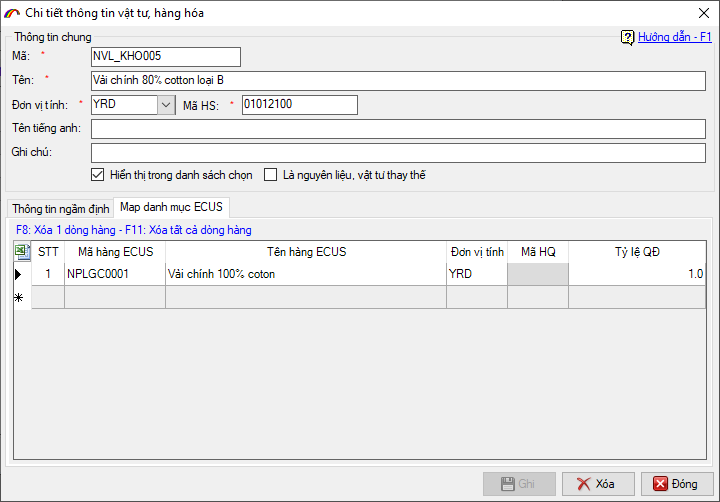
Tùy theo mỗi quan hệ một – một hay một – nhiều bạn chọn danh sách nguyên phụ liệu theo mã ECUS tương ứng trong danh sách.
Tại danh sách nguyên phụ liệu theo kho, phần mềm hỗ trợ bạn chức năng nhập dữ liệu từ file excel có sẵn, bằng cách nhấn phím F6 (để nhập bao gồm cả danh sách map mã ECUS), màn hình hiện ra như sau:
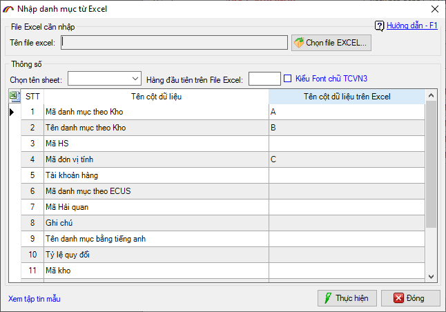
Bạn cần chuẩn bị sẵn file excel chứa dữ liệu cần đưa vào, sau đó thực hiện theo các bước dưới đây:
Bước 1: Chọn file excel
Bước 2: Thiết lập thông số tên sheet, hàng đầu chứa dữ liệu
Bước 3: Thiết lập các cột tương ứng trên file excel
Bước 4: Nhấn nút “Thực hiện” để phần mềm tự động đưa dữ liệu vào danh sách
Dưới đây là ảnh minh họa về thiết lập với file excel chứa dữ liệu tương ứng:
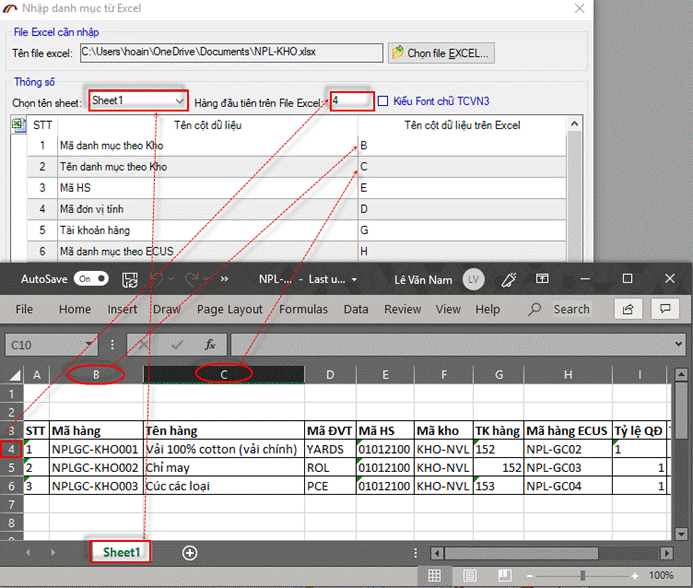
Cuối cùng nhấn vào “Thực hiện” để phần mềm đưa danh sách trong file excel vào cho bạn.
Bạn thực hiện theo cách tương tự cho các danh mục sản phẩm, hàng mẫu, thiết bị nếu có.
Khi bắt đầu thực hiện quản lý kho trên phần mềm ECUS bạn cần thực hiện việc cập nhật số liệu tồn đầu kỳ nguyên liệu vật tư của từng kho, để thực hiện bạn vào menu “Kế toán kho/ Cập nhật tồn Gia công”:
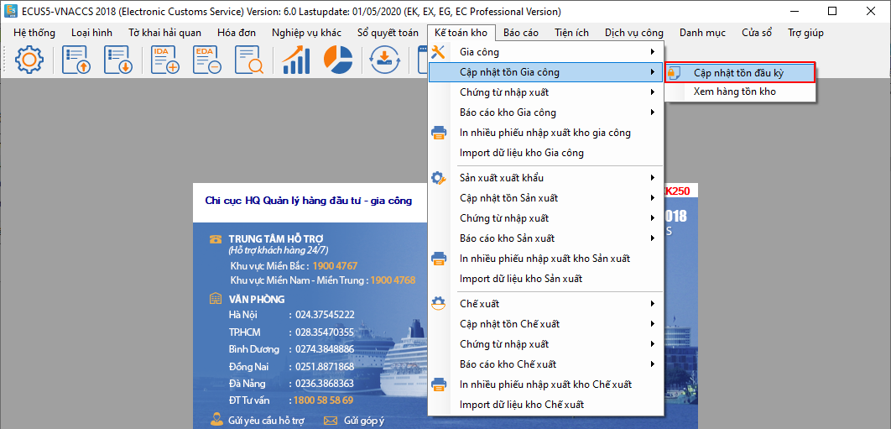
Chọn hợp đồng gia công để cập nhật số liệu tồn:
Màn hình cập nhật số liệu hiện ra như sau:
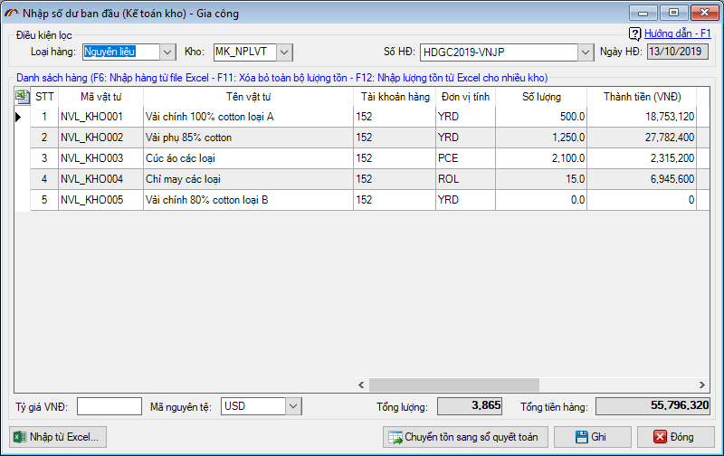
Bạn thực hiện cập nhật số liệu tồn Nguyên liệu, sản phẩm, thiết bị, hàng mẫu cho các kho, bạn cũng có thể đưa số liệu vào từ file excel bằng cách nhấn phím F6 trên bàn phím, màn hình thiết lập hiện ra bạn thiết lập các thông số tương ứng như hình sau :
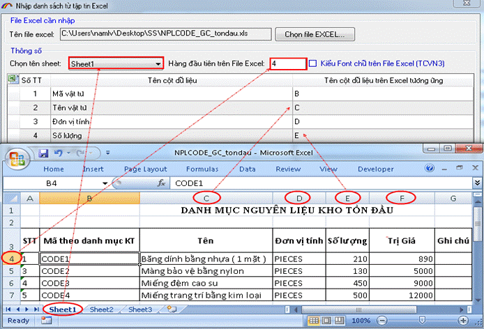
Nhập định mức thực tế cho các sản phẩm chi tiết theo quản lý Kho kế toán, việc nhập định mức sẽ được thực hiện tại Sản phẩm chi tiết.
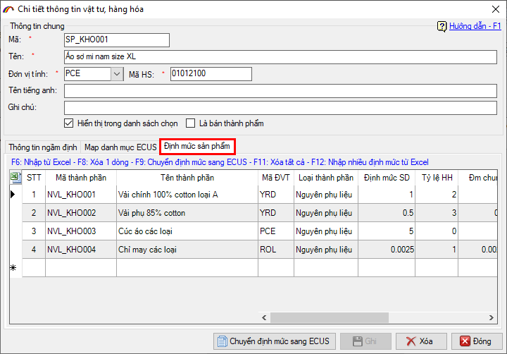
Phiếu nhập kho
Để tạo phiếu nhập kho, bạn vào menu “Kế toán kho/ Chúng từ nhập xuất” và chọn mục “Phiếu nhập kho” màn hình hiện ra như sau :
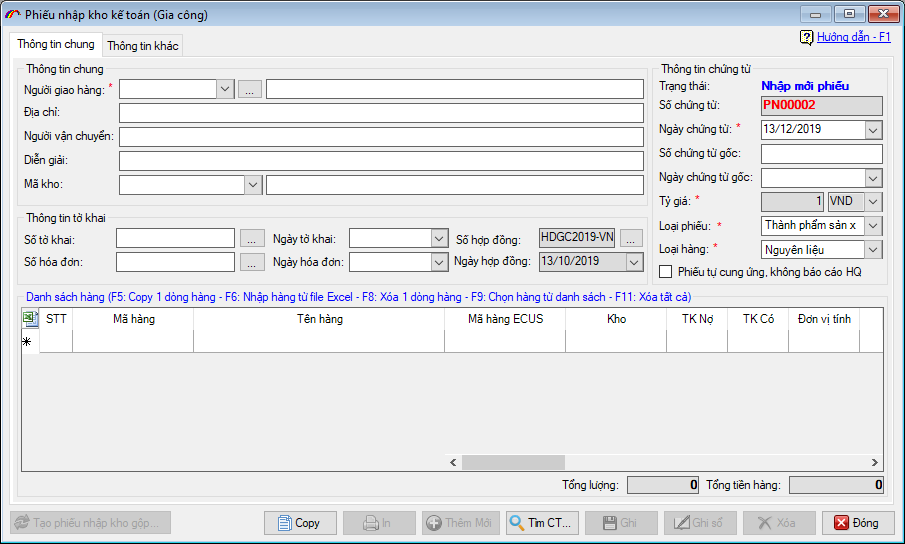
Nhập thông tin chung cho phiếu nhập kho :
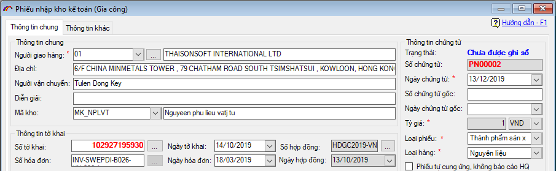
Nhập đối tượng : chọn đối tượng cho phiếu nhập kho từ danh sách, nhấn vào nút dấu (…) để thêm mới danh sách các đối tượng thường xuyên.
Địa chỉ : Nhập thông tin địa chỉ đối tượng, nếu khi bạn thêm danh sách đối tượng thường xuyên mà có nhập cả địa chỉ thì khi chọn đối tượng phần mềm sẽ tự động lấy địa chỉ vào ô này.
Mã kho: Bạn chọn mã kho cần đưa hàng vào cho phiếu nhập kho, nếu chưa có danh sách mã kho bạn cần thêm mới từ menu “Danh mục / 23.Danh mục kho”.
Nhập các thông tin về chứng từ: như ngày chứng từ, số chứng từ gốc nếu có.
Mã nguyên tệ: Chọn mã nguyên tệ sử dụng cho phiếu nhập kho và thiết lập tỷ giá so với đồng tiền Việt Nam.
Loại hàng: để chọn loại hàng hóa cho phiếu nhập kho là Nguyên liệu, sản phẩm, thiết bị hay hàng mẫu.
Thông tin tờ khai: nếu có sẵn thông tin hàng từ tờ khai nhập khẩu Hải quan bạn nhấn vào nút có dấu (…) để chọn, khi đó phần mềm tự động lấy danh sách hàng vào phiếu nhập kho cho bạn.
Nhập danh sách hàng cho phiếu nhập kho:
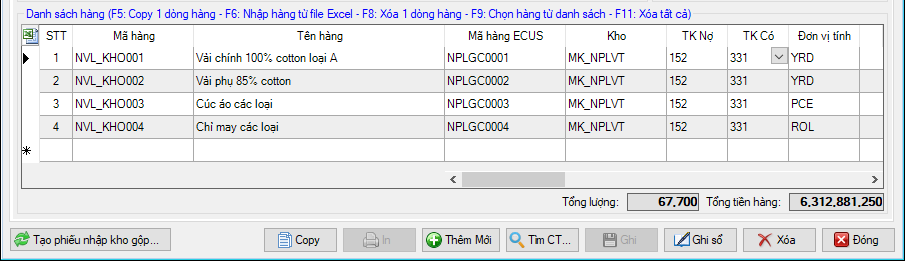
Trong danh sách hàng khi bạn chọn phần mềm sẽ thể hiện mã hàng quản lý kho tương ứng với mã hàng theo danh mục Hải quan.
Phần mềm hỗ trợ chức năng nhập danh sách hàng từ file excel có sẵn dữ liệu, để nhập bạn nhấn phím F6 trên bàn phím để hiện ra cửa sổ thiết lập thông số import, khi đó bạn thiết lập hàng, cột tương ứng với file excel như hình mẫu dưới đây :
Bạn có thể lấy thông tin hàng từ tờ khai nhập khẩu Hải quan bằng cách nhấn vào nút có dấu (…) tại ô “Số tờ khai” để tìm và chọn tờ khai hoặc nhấn vào (…) tại ô “Số hóa đơn” để chọn danh sách hàng từ hóa đơn điện tử đã có ( Hóa đơn điện tử được khai báo bằng nghiệp vụ hóa đơn IVA trên phần mềm ECUS5VNACCS )
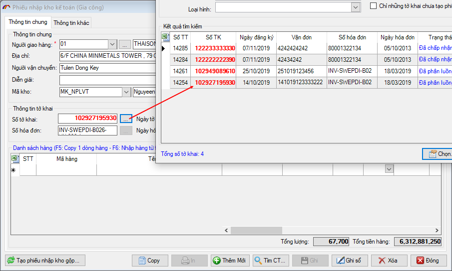
Sau khi tờ khai được chọn, phần mềm tự động lấy danh sách hàng trên tờ khai để đưa vào danh sách hàng của phiếu nhập kho với mã hàng tương ứng với mã hàng ECUS bạn đã thiết lập trong danh mục:
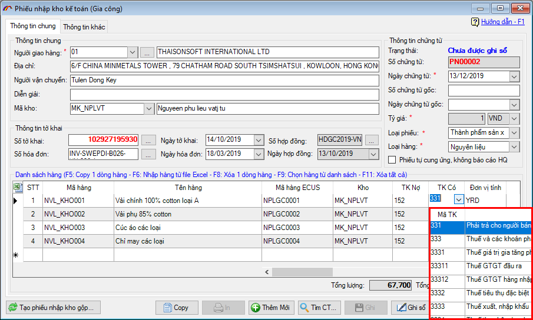
Bạn chỉ cần nhập vào thông tin Tài khoản Nợ - Có cho dòng hàng rồi ghi lại và nhấn vào “Ghi sổ” (nếu tại phần thiết lập thông số ngầm định ban đầu bạn chọn “Ghi dữ liệu đồng thời ghi sổ” thì sau khi nhấn Ghi dữ liệu phần mềm tự động ghi sổ cho bạn).
Lưu ý: để sửa thông tin phiếu nhập kho, bạn nhấn vào nút “Bỏ ghi” để trở về trạng thái sửa dữ liệu.
Nếu ở phần thiết lập thông số ngầm định ở trên bạn có đánh dấu vào mục lựa chọn :
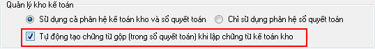
Thì phần mềm sẽ tự động tạo ra cho bạn một phiếu với thông tin tương tự ở Sổ quyết toán, có điều mã hàng trên phiếu vừa được tự động tạo ra ở Sổ quyết toán là mã hàng theo danh mục Hải quan, các mã này được lấy tự động bởi mối liên hệ với mã code quản lý theo nghiệp vụ kho mà bạn đã thiết lập tại phần danh mục ở trên. Phiếu này sẽ phục vụ số liệu cho việc báo cáo quyết toán với Hải quan sau này.
Trường hợp bạn không thiết lập tự động tạo phiếu gộp, bạn có thể nhấn vào nút “
Tạo phiếu nhập kho gộp” trên giao diện phiếu kho:
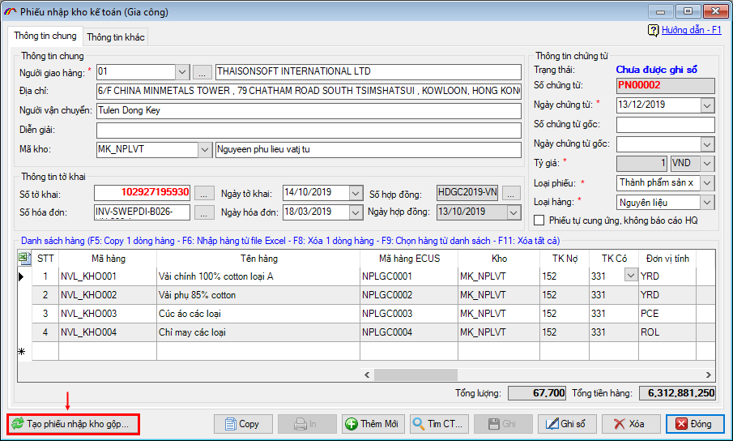
Bạn có thể xem phiếu này tại menu “Sổ quyết toán / Chứng từ nhập xuất” và chọn “Danh sách phiếu nhập kho”:
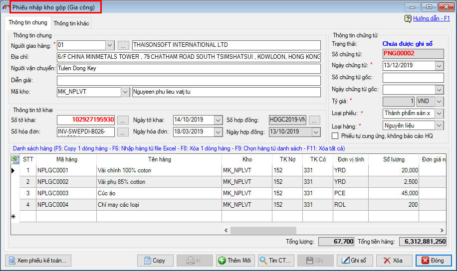
Phiếu xuất kho
Để tạo phiếu xuất kho, bạn vào menu “Kế toán kho/ Chúng từ nhập xuất” và chọn mục “Phiếu xuất kho” màn hình hiện ra như sau :
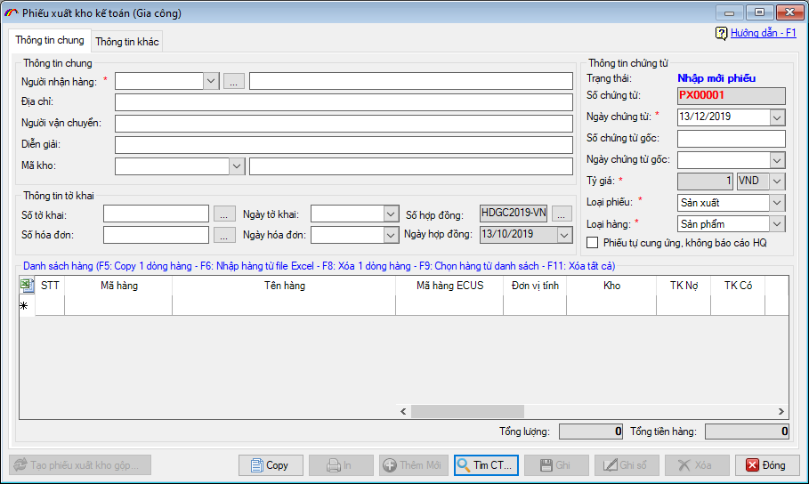
Nhập thông tin chung cho phiếu xuất kho :
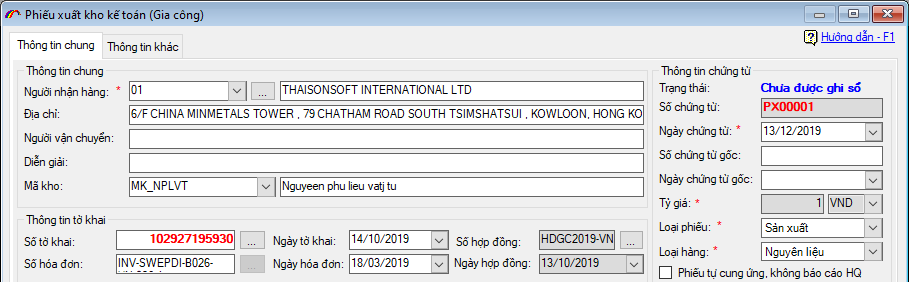
Nhập đối tượng : chọn đối tượng cho phiếu xuất kho từ danh sách, nhấn vào nút dấu (…) để thêm mới danh sách các đối tượng thường xuyên.
Địa chỉ : Nhập thông tin địa chỉ đối tượng, nếu khi bạn thêm danh sách đối tượng thường xuyên mà có nhập cả địa chỉ thì chọn đối tượng, phần mềm sẽ tự động lấy địa chỉ vào ô này.
Mã kho: Bạn chọn mã kho cần đưa hàng ra cho phiếu xuất kho, nếu chưa có danh sách mã kho bạn cần thêm mới từ menu “Danh mục / 23.Danh mục kho”.
Nhập các thông tin về chứng từ: như ngày chứng từ, số chứng từ gốc nếu có.
Mã nguyên tệ: Chọn mã nguyên tệ sử dụng cho phiếu xuất kho và thiết lập tỷ giá so với đồng tiền Việt Nam.
Loại hàng: để chọn loại hàng hóa cho phiếu xuất kho là Nguyên liệu, sản phẩm, thiết bị hay hàng mẫu (ví dụ trên là xuất sản phẩm ra khỏi kho).
Thông tin tờ khai: nếu có sẵn thông tin hàng từ tờ khai xuất nhập khẩu Hải quan bạn nhấn vào nút có dấu (…) để chọn, khi đó phần mềm tự động lấy danh sách hàng vào phiếu nhập kho cho bạn (ví dụ trên là chọn đến tờ khai xuất khẩu sản phẩm).
Nhập danh sách hàng cho phiếu xuất kho:
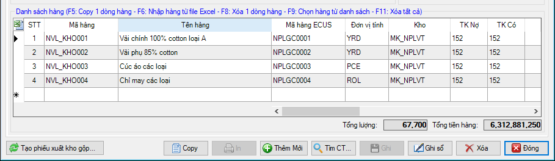
Trong danh sách hàng khi bạn chọn phần mềm sẽ thể hiện mã hàng quản lý kho tương ứng với mã hàng theo danh mục Hải quan.
Phần mềm hỗ trợ chức năng nhập danh sách hàng từ file excel có sẵn dữ liệu, để nhập bạn nhấn phím F6 trên bàn phím để hiện ra cửa sổ thiết lập thông số import, khi đó bạn thiết lập hàng, cột tương ứng với file excel như hình mẫu dưới đây :
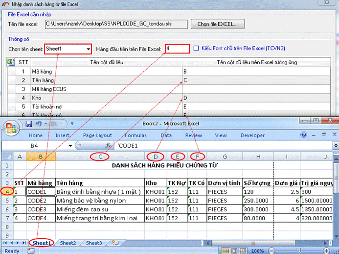
Bạn có thể lấy thông tin hàng từ tờ khai nhập khẩu Hải quan bằng cách nhấn vào nút có dấu (…) tại ô “Số tờ khai” để tìm và chọn tờ khai hoặc nhấn vào (…) tại ô “Số hóa đơn” để chọn danh sách hàng từ hóa đơn điện tử đã có ( Hóa đơn điện tử được khai báo bằng nghiệp vụ hóa đơn IVA trên phần mềm ECUS5VNACCS )
Sau khi tờ khai được chọn, phần mềm tự động lấy danh sách hàng trên tờ khai để đưa vào danh sách hàng của phiếu nhập kho với mã hàng tương ứng với mã hàng ECUS bạn đã thiết lập trong danh mục:
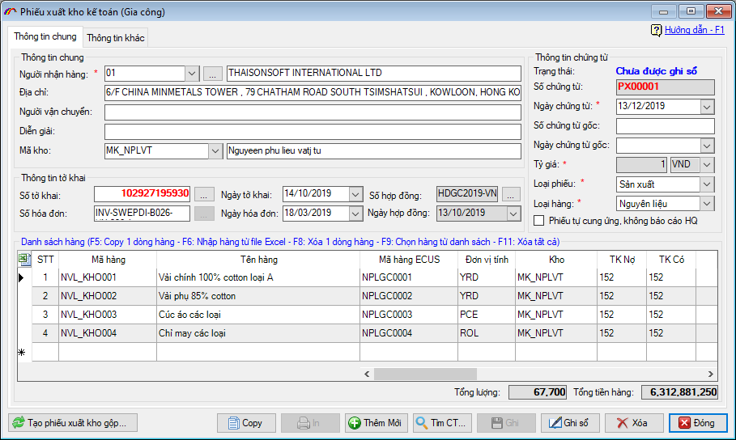
Bạn chỉ cần nhập vào thông tin Tài khoản Nợ - Có cho dòng hàng rồi ghi lại và nhấn vào “Ghi sổ” (nếu tại phần thiết lập thông số ngầm định ban đầu bạn chọn “Ghi dữ liệu đồng thời ghi sổ” thì sau khi nhấn Ghi dữ liệu phần mềm tự động ghi sổ cho bạn).
Lưu ý: để sửa thông tin phiếu nhập kho, bạn nhấn vào nút “Bỏ ghi” để trở về trạng thái sửa dữ liệu.
Nếu ở phần thiết lập thông số ngầm định ở trên bạn có đánh dấu vào mục lựa chọn :
Thì phần mềm sẽ tự động tạo ra cho bạn một phiếu với thông tin tương tự ở Sổ quyết toán, có điều mã hàng trên phiếu vừa được tự động tạo ra ở Sổ quyết toán là mã hàng theo danh mục Hải quan, các mã này được lấy tự động bởi mối liên hệ với mã code quản lý theo nghiệp vụ kho mà bạn đã thiết lập tại phần danh mục ở trên. Phiếu này sẽ phục vụ số liệu cho việc báo cáo quyết toán với Hải quan sau này.
Trường hợp bạn không thiết lập để phần mềm tự động tạo phiếu gộp thì có thể nhấn vào nút “Tạo phiếu xuất kho gộp” trên giao diện phiếu xuất kho vừa tạo:
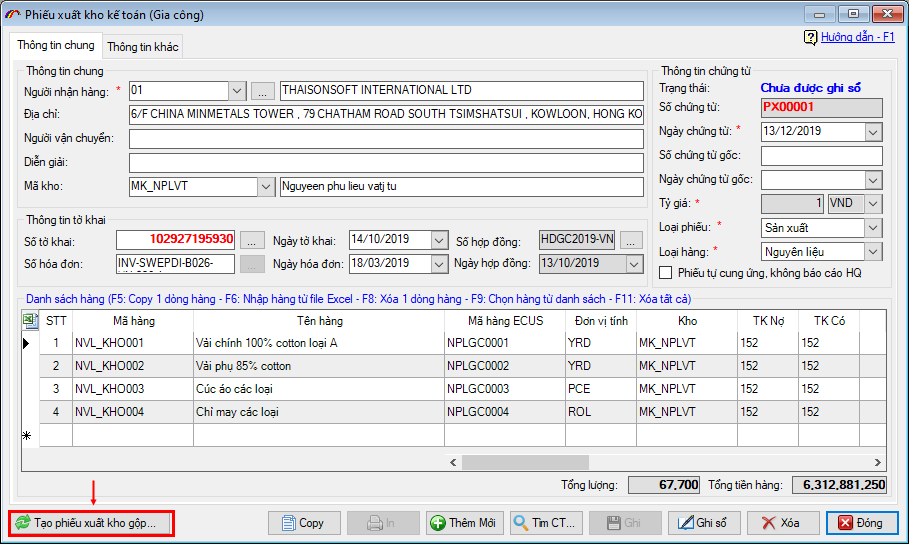
Bạn có thể xem phiếu này tại menu “
Sổ quyết toán / Chứng từ nhập xuất” và chọn “
Danh sách phiếu xuất kho” :
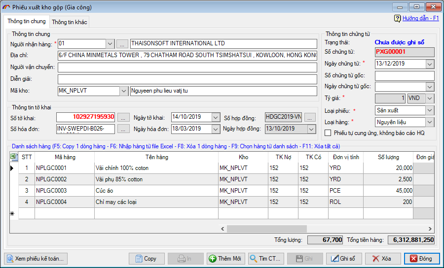
Phiêu chuyển kho được sử dụng để điều chuyển hàng giữa các kho với nhau, để thực hiện phiếu chuyển kho bạn vào menu “Kế toán kho / Chứng từ nhập xuất” và chọn mục “Phiếu chuyển kho” màn hình phiếu chuyển kho hiện ra như sau :
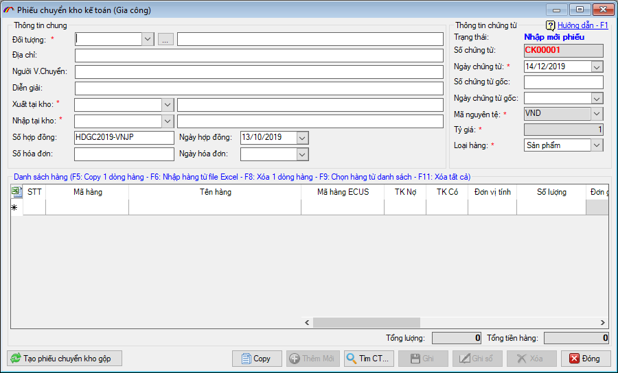
Nhập thông tin chung cho phiếu chuyển kho :
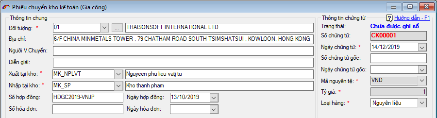
Nhập đối tượng : chọn đối tượng cho phiếu xuất kho từ danh sách, nhấn vào nút dấu … để thêm mới danh sách các đối tượng thường xuyên.
Địa chỉ : Nhập thông tin địa chỉ đối tượng, nếu bạn nhập đầy đủ địa chỉ đối tượng thường xuyên khi thêm mới, phần mềm sẽ tự động lấy địa chỉ vào ô này.
Xuất tại kho: Bạn chọn mã kho cần đưa hàng ra để chuyển sang kho khác cho phiếu chuyển kho, nếu chưa có danh sách mã kho bạn cần thêm mới từ menu “Danh mục / 23.Danh mục kho”.
Nhập tại kho: Bạn chọn mã kho cần đưa hàng vào khi chuyển từ kho khác sang cho phiếu chuyển kho, nếu chưa có danh sách mã kho bạn cần thêm mới từ menu “Danh mục / 23.Danh mục kho”.
Nhập các thông tin về chứng từ: như ngày chứng từ, số chứng từ gốc nếu có.
Mã nguyên tệ: Chọn mã nguyên tệ sử dụng cho phiếu xuất kho và thiết lập tỷ giá so với đồng tiền Việt Nam.
Loại hàng: để chọn loại hàng hóa cho phiếu chuyển kho là Nguyên liệu, sản phẩm, thiết bị hay hàng mẫu.
Nhập danh sách hàng cho phiếu chuyển kho:
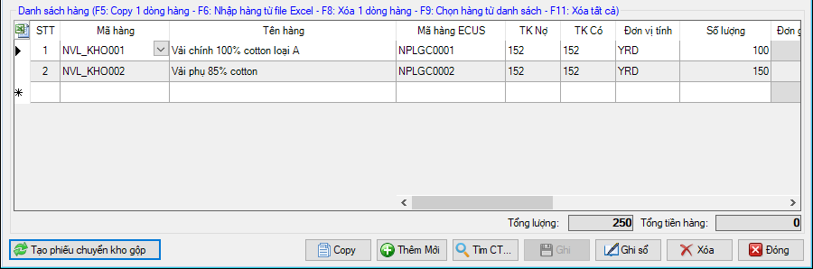
Phần mềm hỗ trợ chức năng nhập danh sách hàng từ file excel có sẵn dữ liệu, để nhập bạn nhấn phím F6 trên bàn phím để hiện ra cửa sổ thiết lập thông số import, khi đó bạn thiết lập hàng, cột tương ứng với file excel như hình mẫu dưới đây :
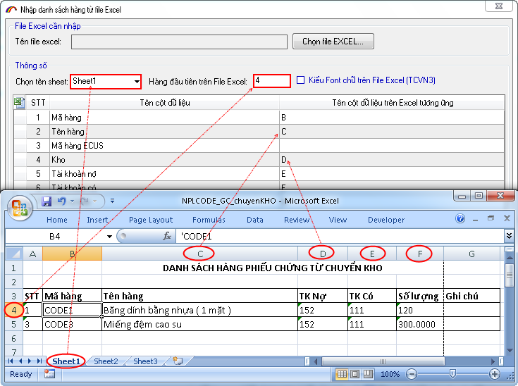
Bạn nhấn vào “Ghi sổ” (nếu tại phần thiết lập thông số ngầm định ban đầu bạn chọn “Ghi dữ liệu đồng thời ghi sổ” thì sau khi nhấn Ghi dữ liệu phần mềm tự động ghi sổ cho bạn).
Lưu ý: để sửa thông tin phiếu nhập kho, bạn nhấn vào nút “Bỏ ghi” để trở về trạng thái sửa dữ liệu.
Phiếu kiểm kê.
Hàng kỳ tháng hoặc quý doanh nghiệp thường có nhu cầu kiểm kê hàng hóa trong kho, việc kiểm kê có thể có nhiều mục đích khác nhau ngoài nhu cầu vê quản lý nhằm phát hiện những gian lận hay sai sót trong quản lý kho bãi, đôi khi nó cũng có tác dụng để tính giá thành hay xác định lượng hàng tiêu thụ trong kỳ.
Để thực hiện kiểm kê bạn vào menu “
Kế toán kho/Chứng từ nhập xuất” và chọn Phiếu kiểm kê, màn hình phiếu kiểm kê hiện ra như sau :
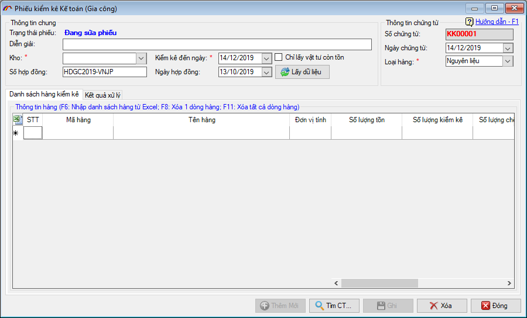
Các thông tin chung của phiếu kiểm kê:
- Diễn giải : Nhập vào nội dung kiểm kê.
- Kho : Chọn mã kho cần kiểm kê.
- Số hợp đồng, ngày hợp đồng : Nhập vào số hợp đồng vào ngày hợp đồng nếu loại hình kiểm kê là Gia công.
- Kiểm kê đến ngày : Bạn chọn khoảng thời gian kiểm kê.
- Loại hàng: Chọn loại hàng cần kiểm kê là nguyên liệu, sản phẩm, thiết bị hay hàng mẫu.
Sau khi nhập xong các chỉ tiêu ở trên, bạn nhấn vào “Lấy dữ liệu”, nếu chỉ muốn hiện danh sách còn tồn bạn đánh dấu tích chọn vào mục “Chỉ lấy vật tư tồn” danh sách vật tư sẽ hiển thị trong tab “Danh sách hàng kiểm kê”:
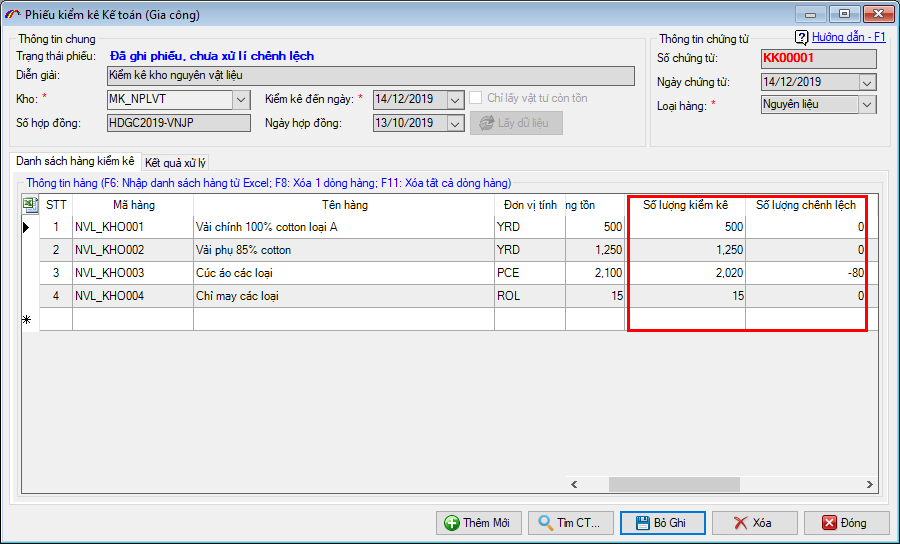
Bạn tiến hành nhập vào số lượng kiểm kê thực tế tại kho vào cột “
Số lượng K.Kê” phần mềm sẽ tự động tính số lượng sai lệch, sau đó nhấn vào nút “
Ghi” để ghi lại.
Nếu việc kiểm kê có sự chênh lệch, để mở các chứng từ nhập xuất để điều chỉnh số lượng bạn vào tab “
Kết quả xử lý” và chọn “
Tạo phiếu nhập” hoặc “
Tạo phiếu xuất”:
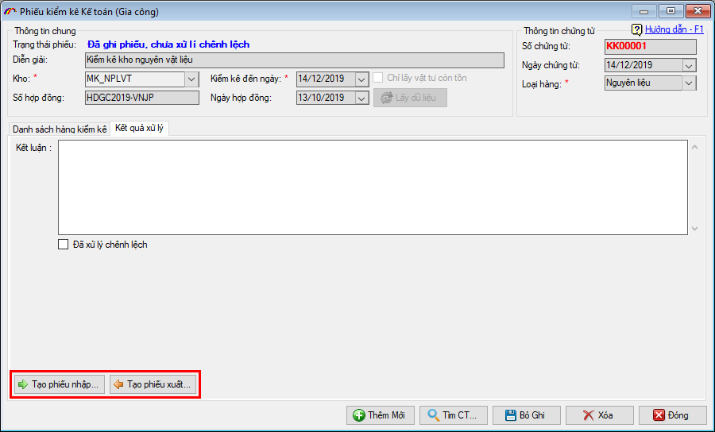
Theo nghiệp vụ kế toán, khi tạo phiếu xuất kho người dùng không phải nhập đơn giá xuất. Chỉ khi đến kỳ báo cáo, quyết toán sẽ thực hiện việc tính đơn giá xuất để cập nhật cho các phiếu xuất đã có trong kỳ quyết toán này.
Phần mềm hỗ trợ doanh nghiệp cách tính giá xuất theo phương pháp tính giá xuất bình quân theo kỳ. Bạn vào menu “
Kế toán kho/ Chứng từ nhập xuất” và chọn mục “
Tính giá xuất kho”:
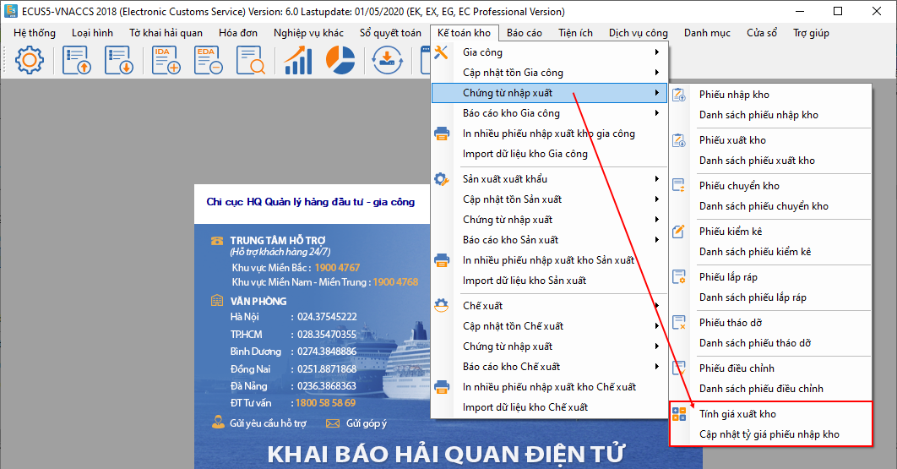
Màn hình tính giá xuất kho hiện ra như sau :
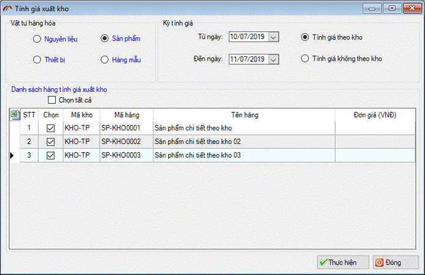
Tại đây bạn cần chọn loại vật tư, hàng hóa tính giá xuất, chọn kỳ tính thuế trong khoảng thời gian từ ngày đến ngày. Bạn cần lưa ý ngày bắt đầu của kỳ tính thuế phải là ngày lớn hơn ngày khóa sổ gần nhất nếu có. Ví dụ bạn đã khóa sổ vào ngày 30/06/2019 thì ngày bắt đầu tính giá xuất của kỳ kế tiếp có thể là 01/07/2019 trở về sau.
Có hai hình thức tính giá xuất đó là :
Tính giá theo kho: là chỉ tính giá xuất kho cho các mã hàng, vật tư có phiếu xuất, nhập theo từng kho phân biệt.
Tính giá không theo kho: là tính giá xuất kho chung cho các mã hàng hóa, vật tư có phiếu nhập, xuất kho không phân biệt theo kho.
Cuối cùng bạn nhấn vào nút “Thực hiện” sau khi tính giá xuất thành công phần mềm sẽ tự động cập nhật lại đơn giá xuất vừa tính vào các Phiếu xuất kho đã có trong khoảng thời gian kỳ tính giá mà bạn vừa chọn ở trên.
Khi cần xem báo cáo chi tiết Thẻ kho, báo cáo nhập xuất tồn, báo cáo quyết toán bạn vào menu “
Kế toán kho/ Báo cáo gia công”:
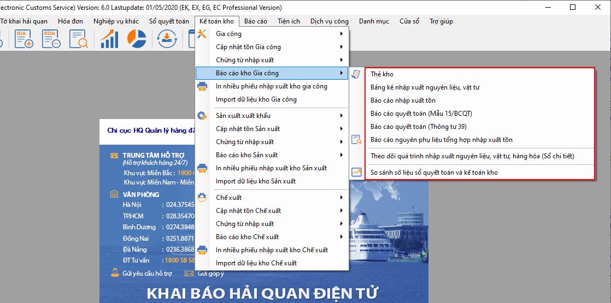
Báo cáo chi tiết thẻ kho (sổ kho).
Để xem báo cáo thẻ kho chi tiết bạn chọn “
Thẻ kho” từ menu trên :
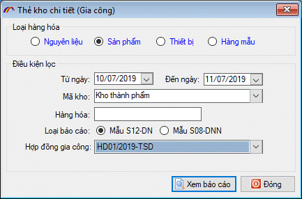
Bạn chọn các điều kiện lọc sau đó nhấn vào nút “
Xem báo cáo” để phần mềm xuất ra báo cáo thẻ kho chi tiết, ví dụ:
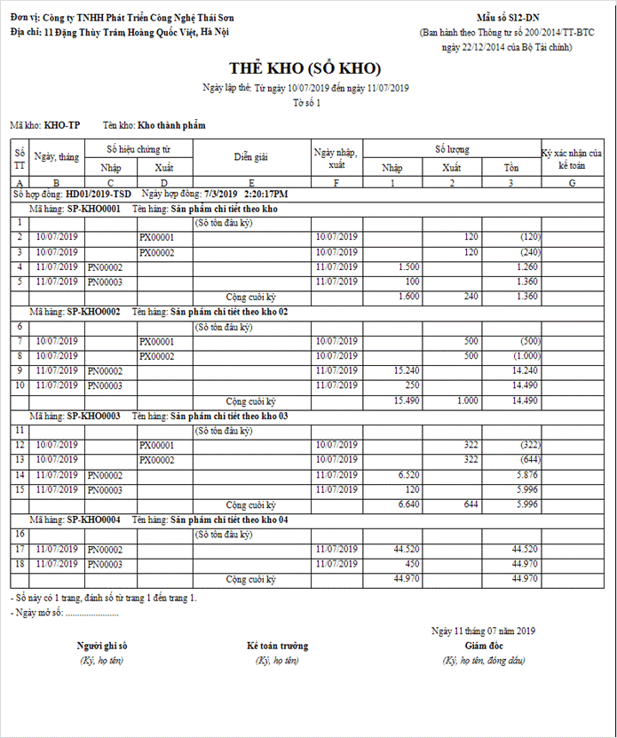
Báo cáo nhập xuất tồn kho.
Để xem báo cáo thẻ kho chi tiết bạn chọn “
Báo cáo nhập xuất tồn” từ menu trên, màn hình chức năng hiện ra như sau:
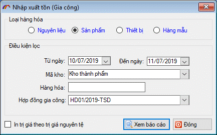
Bạn chọn các điều kiện lọc sau đó nhấn vào nút “
Xem báo cáo” để phần mềm xuất ra báo cáo thẻ kho chi tiết, ví dụ:
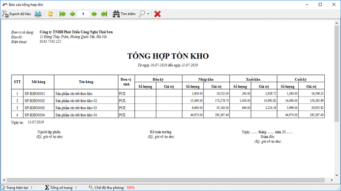
Báo cáo tổng hợp nhập xuất tồn Nguyên phụ liệu.
Báo cáo này hỗ trợ doanh nghiệp theo dõi lượng nhập xuất tồn nguyên liệu dựa theo bảng định mức sản phẩm chi tiết.
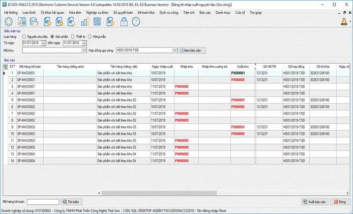
Bạn có thể kết xuất báo cáo bằng cách nhấn vào nút “
Xuất báo cáo”
Bản quyền © thuộc về Công ty TNHH Phát triển công nghệ Thái Sơn